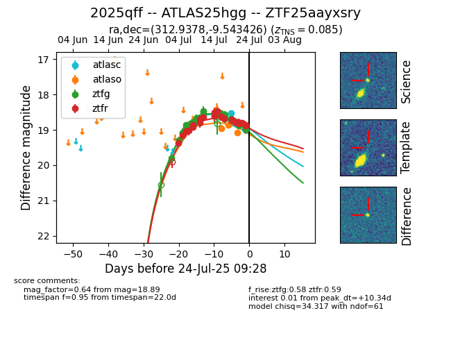

Target ZTF25aayxsry at 2025-07-24 09:28, see:
FINK: fink-portal.org/ZTF25aayxsry
Lasair: lasair-ztf.lsst.ac.uk/objects/ZTF25aayxsry
ALeRCE: alerce.online/object/ZTF25aayxsry
TNS: wis-tns.org/object/2025qff
YSE: ziggy.ucolick.org/yse/transient_detail/2025qff
alt names
ZTF25aayxsry (ztf,fink)
2025qff (tns,yse)
ATLAS25hgg (atlas)
coordinates:
equatorial (ra, dec) = (312.9378,-9.54343)
galactic (l, b) = (38.1420,-31.02915)
photometry
last atlasc=18.97, atlaso=19.09, ztfg=19.00, ztfr=18.89
3 atlasc, 3 atlaso, 32 ztfg, 23 ztfr detections
